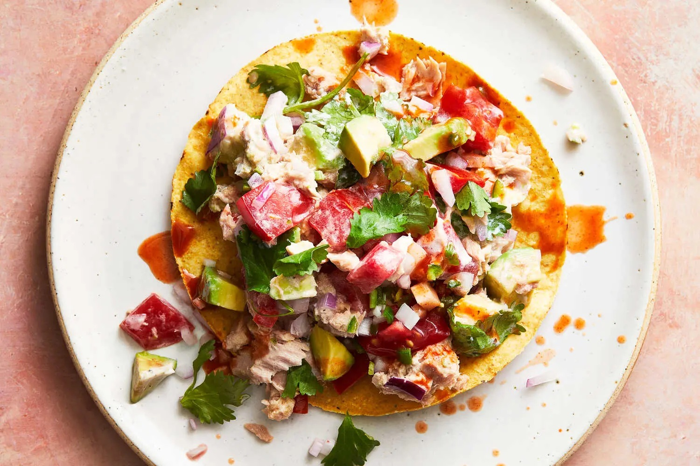

Spicy Tuna and Avocado Tostadas

Courtesy of The New York Times
Topped with a cross between a chunky guacamole and a tuna salad, these
tostadas are a super satisfying, no-cook lunch or dinner for a steamy
summer night when turning on the stove is a no-go. Instead of fresh tuna,
this recipe employs the tinned variety, making these tostadas accessible
for any budget. The simple serrano and lime dressing is tart and spicy
with a hint of creaminess that balances the lean nature of canned tuna.
Eat the salad like a dip with a bag of totopos at your desk, or pack it up
with a bottle of wine and assemble your tostadas outside for a picnic in
the park or day at the beach.
Ingredients
- 2 medium garlic cloves, finely grated
- 1 serrano chile, finely diced
- 1 lime, juiced (about 2 tablespoons)
- 2 tablespoons mayonnaise
- Salt and pepper
- ⅓ packed cup cilantro leaves and tender stems
- 1 large ripe Hass avocado
- ½ small red onion
- 1 medium tomato
- 2 (5-ounce) cans tuna packed in oil, drained
- 6 tostada shells
- Hot sauce, for serving (optional)
Instructions
-
Make the dressing: In a medium bowl, mix together the garlic, serrano,
lime juice, mayonnaise, ½ teaspoon salt and ½ teaspoon pepper until well
combined; set aside.
-
Make the salad: Roughly chop the cilantro, chop the avocado, dice the
red onion and tomato, and place everything in the bowl with the
dressing. Add the tuna and ¼ teaspoon salt and toss until combined.
Taste and add more salt as desired. Serve immediately, or cover and
refrigerate for up to two days.
-
When you are ready to eat, divide the filling among the tostada shells
(about a generous ½ cup tuna salad for each tostada) and top with hot
sauce, if desired.
Home